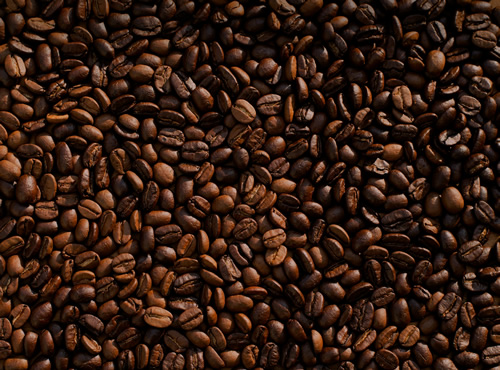
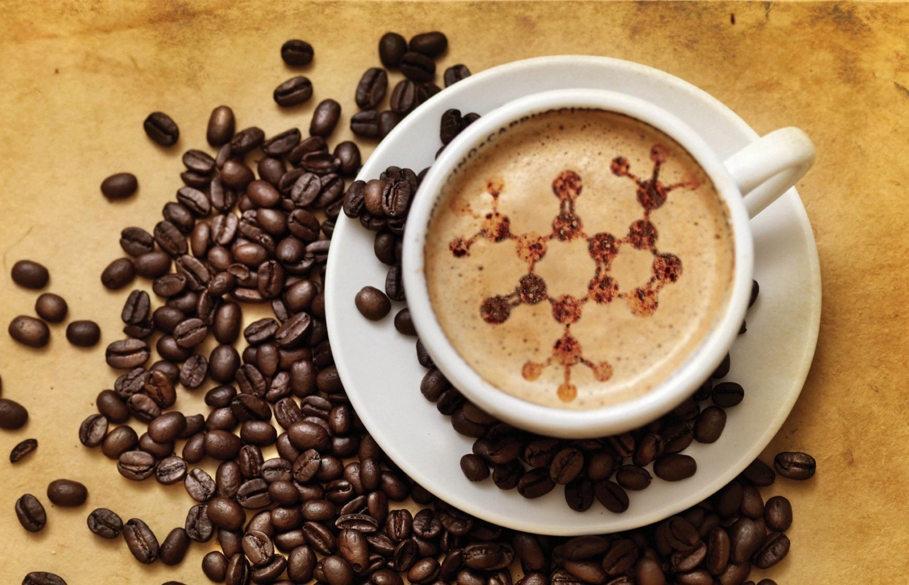
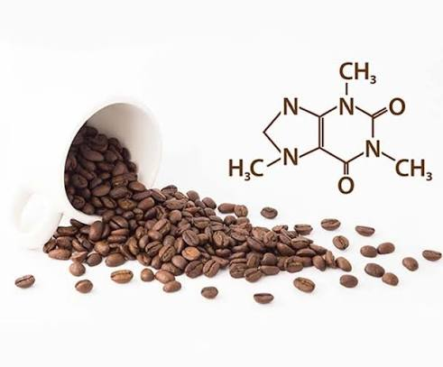
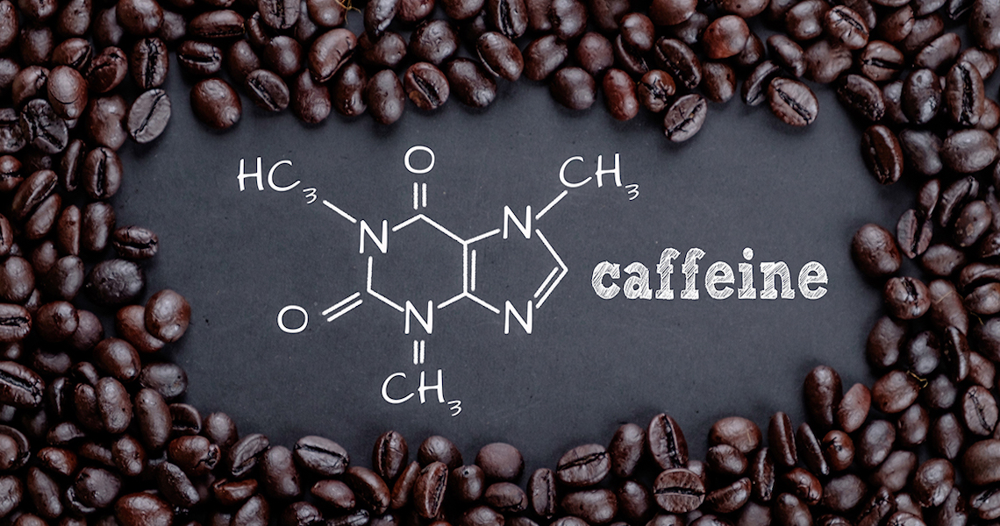

La cafeína es una sustancia amarga que se encuentra naturalmente en más de 60 plantas, incluyendo:
Granos de café
Hojas de té
Nueces de cola, que se usan para el sabor de las bebidas de cola
Vainas de cacao, que se utilizan para hacer productos de chocolate
También existe la cafeína sintética (hecha por el hombre), que se añade a algunos medicamentos, alimentos y bebidas.
Por ejemplo, algunos analgésicos,
medicamentos para el resfrío y medicamentos de venta libre para la concentración contienen cafeína sintética.
Lo mismo con bebidas energéticas y productos para "aumentar la energía".

El principal mecanismo de acción farmacológico de la cafeína reside en su capacidad para actuar como un antagonista competitivo
no selectivo de los receptores de adenosina, principalmente los subtipos A
1A y 2A en el sistema nervioso central. Al bloquear la unión de la adenosina —un neuromodulador inhibitorio que promueve la somnolencia—,
la cafeína previene la inactivación neuronal y
estimula la liberación de diversos neurotransmisores, como la dopamina, la noradrenalina y la acetilcolina.

Posterior a su acción fisiológica, el metabolismo de la cafeína se lleva a cabo casi exclusivamente en el hígado a través del sistema enzimático del citocromo P450,
en particular por la isoenzima CYP1A2. Este proceso de desmetilación hepática convierte a la cafeína en tres metabolitos primarios activos:
la paraxantina (que incrementa la lipólisis),
la teobromina (que dilata los vasos sanguíneos y aumenta el volumen urinario) y la teofilina (que relaja el músculo liso bronquial).

La vida media de eliminación de la cafeína en adultos sanos oscila por lo general entre 3 y 7 horas,
aunque este periodo puede variar significativamente según factores como el tabaquismo, el embarazo o el uso de ciertos medicamentos.
Los metabolitos resultantes de la degradación hepática sufren trasformaciones posteriores hasta convertirse en ácido úrico y derivados de xantina,
los cuales son excretados casi en su totalidad por vía renal a través de la orina.

Como consecuencia directa de su excreción y del consumo continuo,
el organismo puede desarrollar tolerancia farmacológica frente a la cafeína mediante la regulación al alza (upregulation) de los receptores de adenosina en el sistema nervioso central.
Este fenómeno adaptativo reduce progresivamente la respuesta estimulante inicial, haciendo que dosis habituales pierdan eficacia con el tiempo. Asimismo, si el consumo crónico se
interrumpe de forma abrupta, la sobreabundancia de estos receptores
provoca una hipersensibilidad a la adenosina que desencadena el síndrome de abstinencia, caracterizado por síntomas como cefalea, fatiga, somnolencia e irritabilidad.